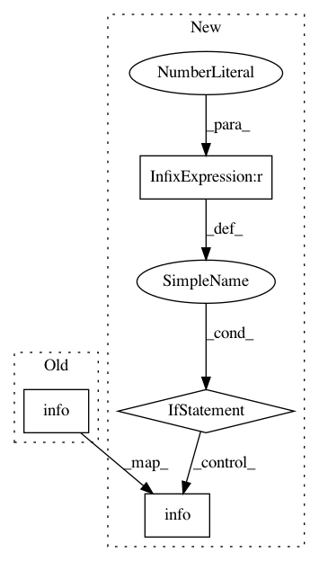

a0ad3b8ab0666bff2bdf2028a0a6aa8e559d5bc1,steps/pytorch/callbacks.py,ExperimentTiming,on_epoch_begin,#ExperimentTiming#,341
Before Change
def on_epoch_begin(self, *args, **kwargs):
if self.epoch_id > 0:
epoch_time = datetime.now() - self.epoch_start
logger.info("epoch {0} time {1}".format(self.epoch_id - 1, str(epoch_time)[:-7]))
self.epoch_start = datetime.now()
self.current_sum = timedelta()
self.current_mean = timedelta()
logger.info("epoch {0} ...".format(self.epoch_id))
After Change
if self.epoch_id > 0:
epoch_time = datetime.now() - self.epoch_start
if self.epoch_every:
if (self.epoch_id % self.epoch_every) == 0:
logger.info("epoch {0} time {1}".format(self.epoch_id - 1, str(epoch_time)[:-7]))
self.epoch_start = datetime.now()
self.current_sum = timedelta()
self.current_mean = timedelta()
logger.info("epoch {0} ...".format(self.epoch_id))
In pattern: SUPERPATTERN
Frequency: 3
Non-data size: 4
Instances
Project Name: minerva-ml/open-solution-data-science-bowl-2018
Commit Name: a0ad3b8ab0666bff2bdf2028a0a6aa8e559d5bc1
Time: 2018-02-16
Author: kamil.kaczmarek@codilime.com
File Name: steps/pytorch/callbacks.py
Class Name: ExperimentTiming
Method Name: on_epoch_begin
Project Name: carpedm20/ENAS-pytorch
Commit Name: f98bd2ec9d4289939ff6661d5a9c43ee7e8996f7
Time: 2018-03-11
Author: dukebw@mcmaster.ca
File Name: models/shared_rnn.py
Class Name: RNN
Method Name: forward
Project Name: KrishnaswamyLab/PHATE
Commit Name: 44f9ddb834a806a7c30fe5c10451a6e126eb7984
Time: 2018-05-30
Author: scottgigante@gmail.com
File Name: Python/phate/logging.py
Class Name: TaskLogger
Method Name: complete_task